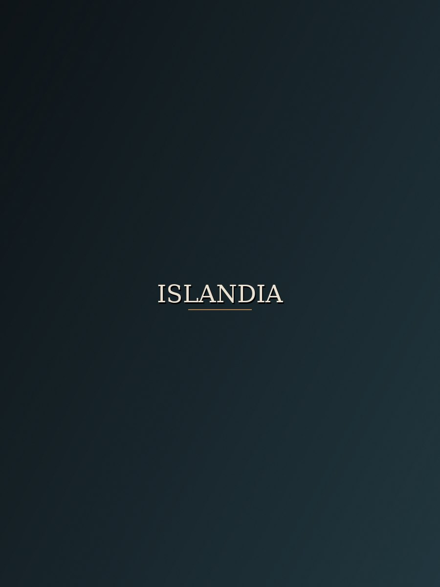
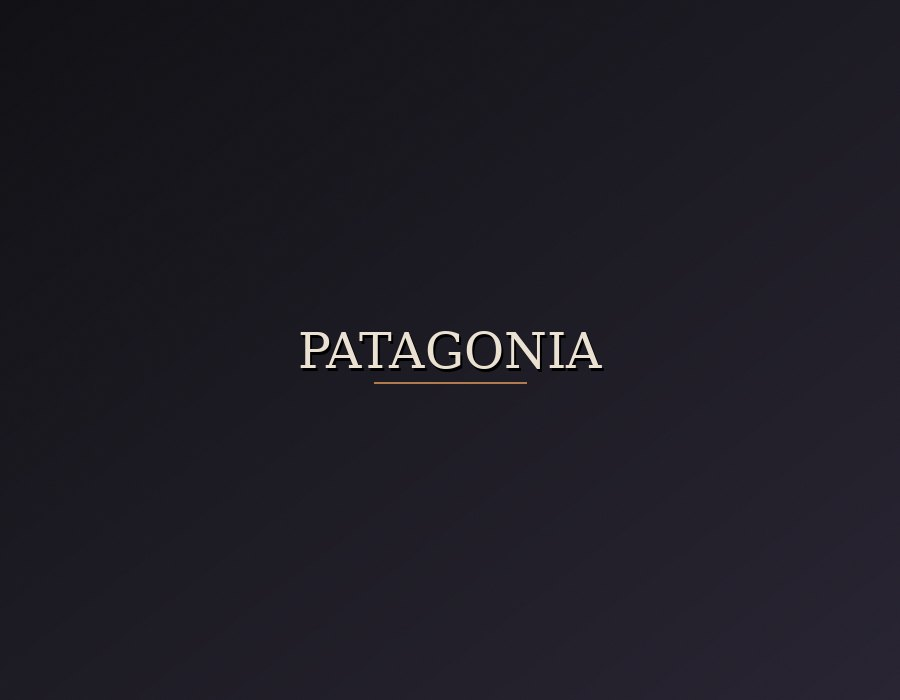
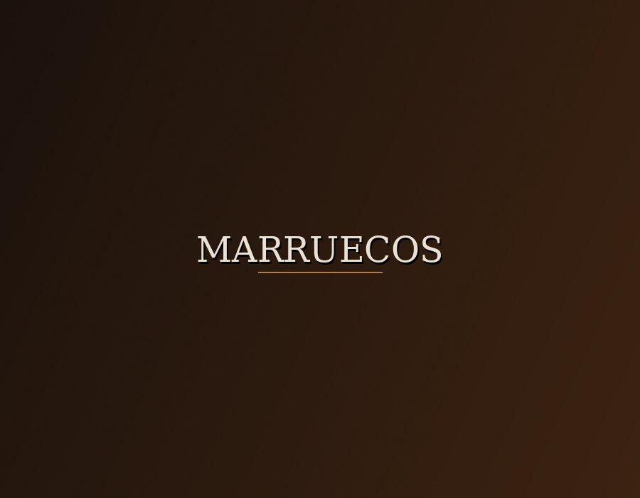
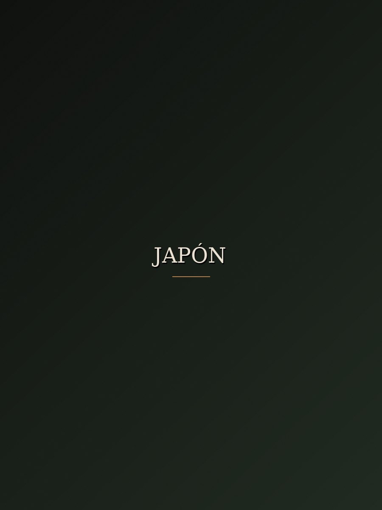
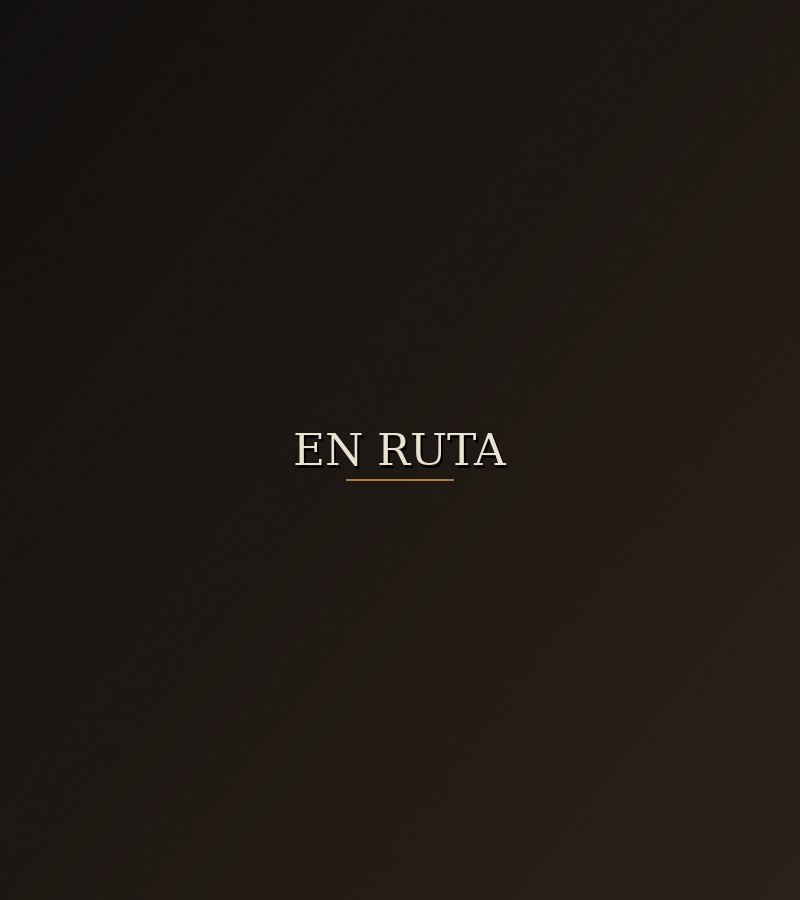

Fotografía · Aventura · Rincones remotos
El mundo tiene historias. Nosotros te llevamos a fotografiarlas.
Viajes fotográficos diseñados a medida, guiados por profesionales que conocen cada luz, cada sendero y cada momento en el que el paisaje se convierte en recuerdo.
0+
Países recorridos
0+
Viajeros guiados
0
Años de experiencia
0
Valoración media
Destinos seleccionados
Cada ruta, una historia distinta




Nuestra manera de viajar
No vendemos billetes. Diseñamos miradas.
Cada ruta de VISIONS la construye un fotógrafo que ya ha estado allí: conoce la luz de las cinco de la mañana, el mirador que nadie encuentra solo, y el momento exacto en el que un lugar deja de ser un destino y se convierte en una fotografía que vas a mirar durante años.
- Grupos reducidos, máximo 8 personas
- Guía fotográfico profesional en cada ruta
- Itinerarios pensados para la mejor luz, no para el autobús
- Equipo de apoyo local en cada destino
Lo que cuentan al volver
Historias de quienes ya viajaron con nosotros
"Volví con una tarjeta de memoria llena y la sensación de haber visto Islandia de verdad, no desde la ventanilla de un bus."
"El guía nos despertó a las 4:30 para una luz que duró diez minutos. Esos diez minutos valieron el viaje entero."
"Grupo pequeño, ritmo humano, cero prisa. Se nota que quien diseña la ruta también sabe sostener una cámara."
¿Cuál va a ser tu próxima fotografía?
Cuéntanos qué luz buscas y diseñamos la ruta contigo.